1000 flights on analysis seeds 3,000,000,000+ (never used in training, validation or test): 689 landed, 270 crashed, 41 timed out. "Fails soon" = within 30 steps.
| signal | median, landing flights | median at failure | AUC (warning) | added info (partial corr.) | leaves normal range (steps before) |
|---|---|---|---|---|---|
| falling speed below altitude 0.3 | 0.00 | 0.19 | 0.83 (higher) | +0.20 | 30 |
| |x| below altitude 0.3 | 0.00 | 0.25 | 0.79 (higher) | +0.22 | |
| |angle| | 0.10 | 0.21 | 0.74 (higher) | +0.17 | |
| vertical velocity input | -0.14 | -0.19 | 0.71 (lower) | 46 | |
| altitude input | 0.29 | -0.03 | 0.71 (lower) | ||
| horizontal velocity input | 0.00 | -0.14 | 0.71 (lower) | ||
| speed |v| | 0.28 | 0.33 | 0.68 (higher) | +0.14 | |
| x position input | 0.03 | -0.22 | 0.68 (lower) | ||
| angle input | -0.00 | -0.00 | 0.68 (lower) | ||
| |angular velocity| | 0.05 | 0.47 | 0.67 (higher) | +0.31 | 9 |
| distance to pad | 0.42 | 0.25 | 0.66 (lower) | +0.21 | |
| best minus 2nd-best output | 0.00 | 0.00 | 0.62 (lower) | +0.09 | |
| |wind| averaged over 50 steps | 0.44 | 0.48 | 0.58 (higher) | +0.16 | |
| wind change over 20 steps | 0.15 | 0.51 | 0.58 (higher) | +0.20 | |
| steps flown | 197.00 | 198.00 | 0.57 (higher) | -0.24 | |
| wind force (+ = to the right) | 0.00 | 0.00 | 0.57 (lower) | -0.24 | |
| left leg contact input | 0.00 | 1.00 | 0.56 (higher) | ||
| wind strength |wind| | 0.38 | 0.00 | 0.55 (lower) | +0.02 | |
| main engine share, last 20 steps | 0.50 | 0.45 | 0.55 (higher) | +0.02 | |
| exactly one leg down | 0.00 | 0.00 | 0.55 (higher) | +0.05 | |
| right leg contact input | 0.00 | 1.00 | 0.53 (higher) | ||
| wind pushing away from the middle (wind × sign x) | 0.00 | 0.00 | 0.53 (higher) | +0.05 | |
| side engine share, last 20 steps | 0.45 | 0.50 | 0.53 (higher) | +0.13 | |
| action changes, last 20 steps | 0.65 | 0.45 | 0.52 (higher) | -0.19 | |
| angle × angular velocity (tilt growing) | 0.00 | 0.02 | 0.52 (higher) | +0.15 | |
| wind pushing along the drift (wind × vx) | 0.00 | 0.00 | 0.51 (higher) | -0.03 | |
| angular velocity input | 0.00 | 0.18 | 0.50 (higher) | 3 |
AUC of the game's own shaping score of the state: 0.52. "Leaves normal range" = steps before failure where the median first exceeds the 90th percentile of |value| on landing flights. Findings are leads: test them by retraining.
311 of 1000 flights failed. Titles give the cause and the episode reward.
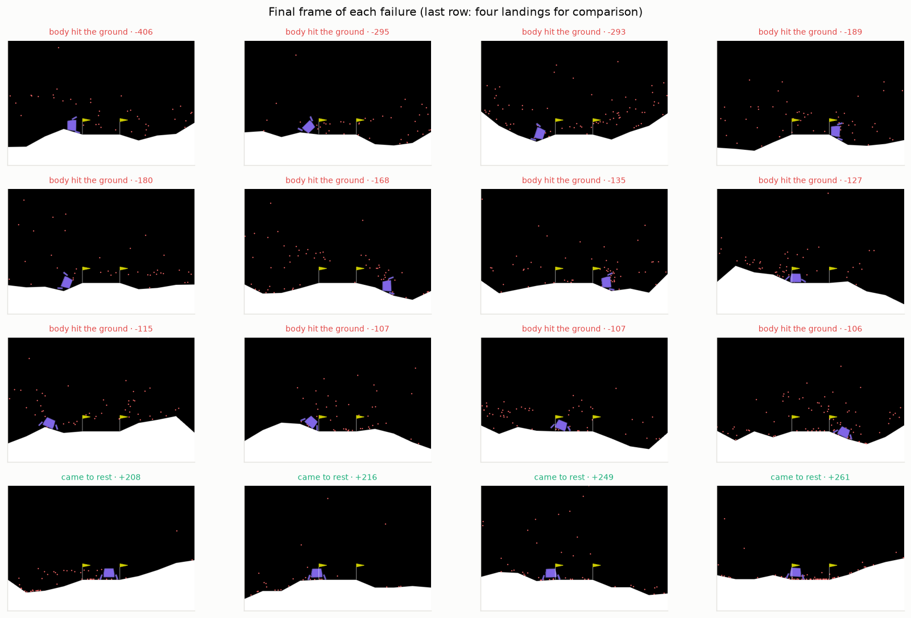
Darker = more time spent there. 30% of failures end above the pad (|x| < 0.2).
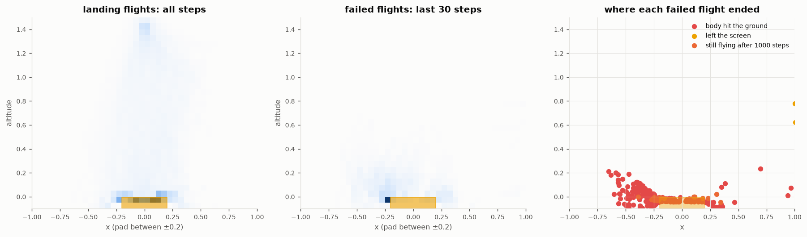
Median and interquartile band over the last 150 steps of failed flights. Dashed: median over landing flights. Blue = an input the network sees, orange = a derived candidate.
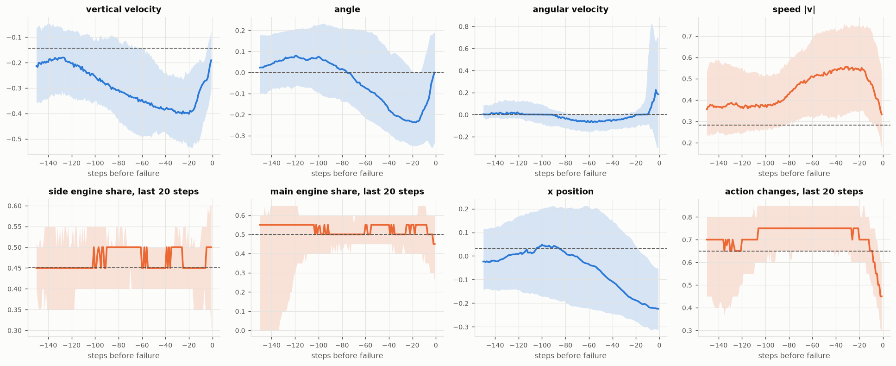
Left: AUC of each signal alone for failing within 30 steps (positives: the last 30 steps of failed flights; negatives: landing flights before touchdown). Right: what each derived signal adds about time-to-failure once the network's own inputs are accounted for.
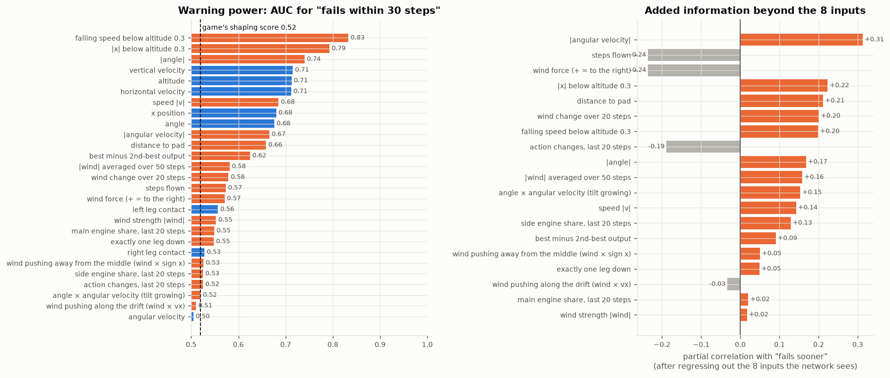
Left: how failures end. Middle: whether failures start with a bigger random push. Right: the failure rate by the average wind over the whole flight. Gusts that come and go are survivable; a push that keeps coming from one side is not. (Wind is zero once a leg touches the ground, so the flight average is used instead of the wind at the moment of failure.)
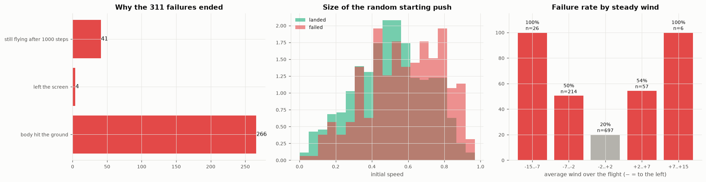
The three worst failures. "Healthy" = speed, |angle| and |angular velocity| all inside the 75th percentile of landing flights.
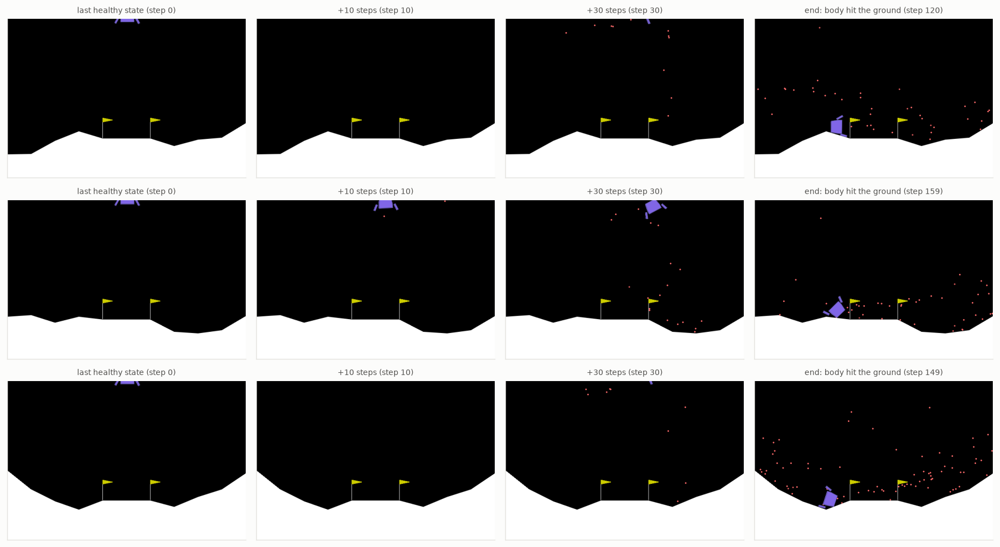
Every genome of a population snapshot re-flown on 100 fresh windy episodes. Left: NEAT ranks genomes by 5 episodes (x), but their real skill is the 100-episode score (y). Right: how much a 5-episode score moves by luck alone vs how much genomes really differ. After generation 150 the luck spread is 54 points and the skill spread 156.
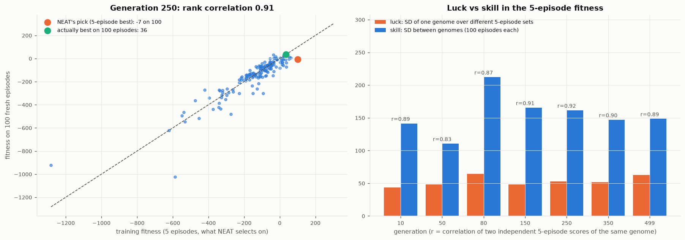
Green: the champion NEAT picked each generation, on unseen episodes. Orange: its lucky 5-episode training score. Blue: the best genome that was actually in the population, found by re-flying every genome on 100 episodes. The gap between orange and green is luck; the gap between blue and green is a better genome NEAT had but did not pick.
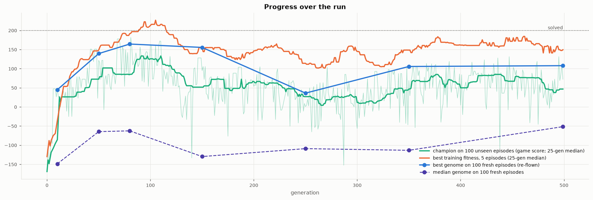
Rank correlation between hidden nodes and real (100-episode) fitness across all snapshots: +0.08. Nothing in the fitness charges for size, so node and connection mutations pile up.
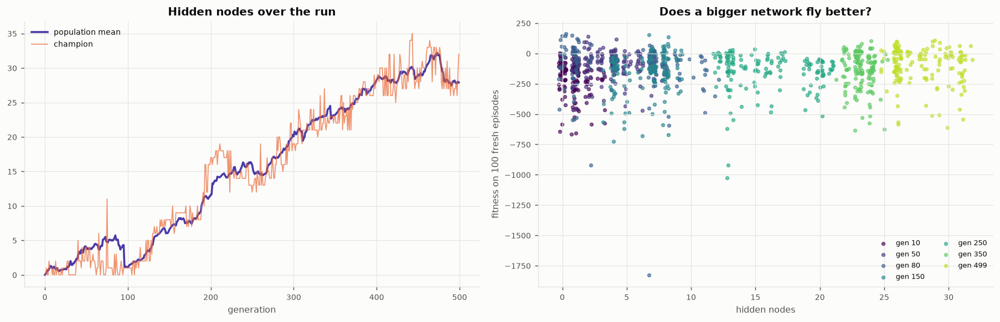
After generation 150: median 4 species, the largest holding 34% of the population. The compatibility threshold (2.2) is fixed, while genomes grow.
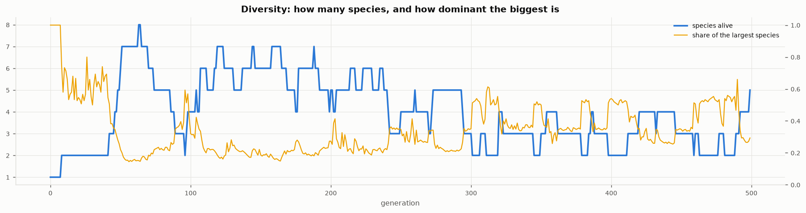
Gymnasium's own hand-written heuristic reacts only to the current state, like the evolved network. It is the reference for what a simple reactive controller manages in this wind.
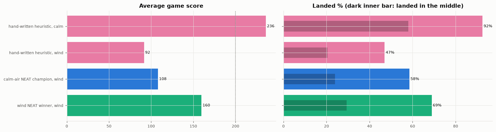